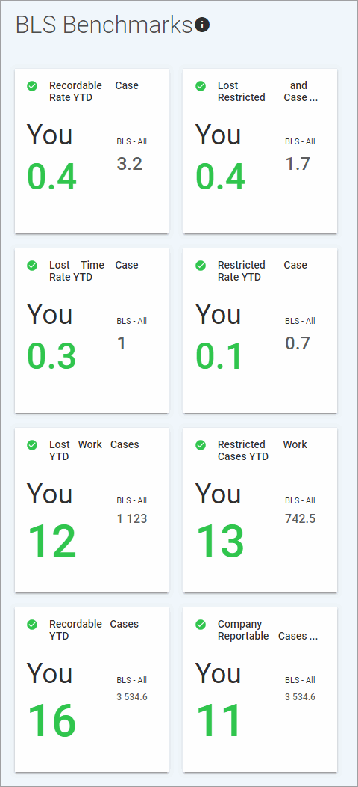

The BLS Benchmarks module allows you to compare your organization’s metrics against 2016 data collected from the Bureau of Labor Statistics (BLS), at a 95% confidence level.
In the Analytics menu, click BLS Benchmarks to view the benchmark indicators.

The “You” data is derived through several “Benchmark” Data Cube queries, and is color-coded to highlight how your metric compares to the industry metric:
Red = Underperform
Orange = Average
Green = Outperform
The “BLS - All” data is derived through several “Benchmark” Report Writer queries.
For an explanation of how the BLS data is acquired, click at the top of the form.
Hover over a benchmark score card to see a description of each.
You can copy and customize the Benchmark Data Cube or Report Writer queries to create indicator cards for the Advanced Dashboard (see Using Indicator Cards to Monitor Intra-Organizational Benchmarks).